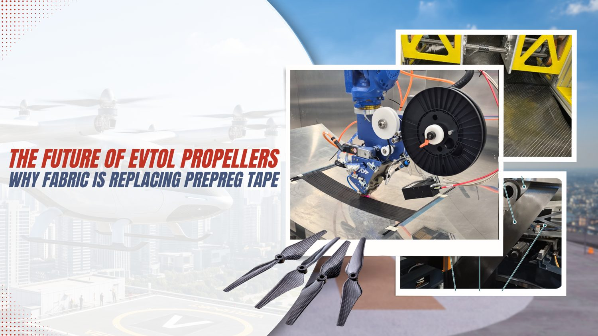
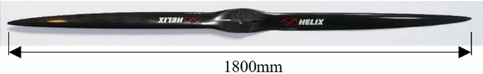
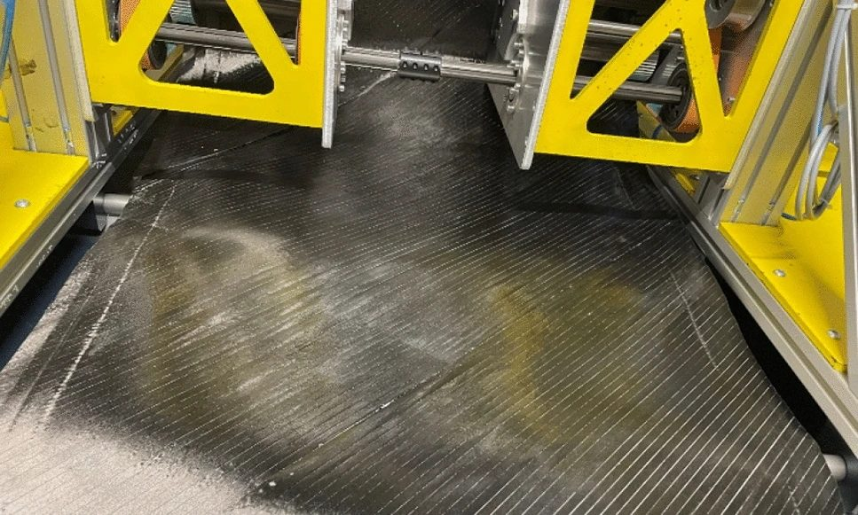
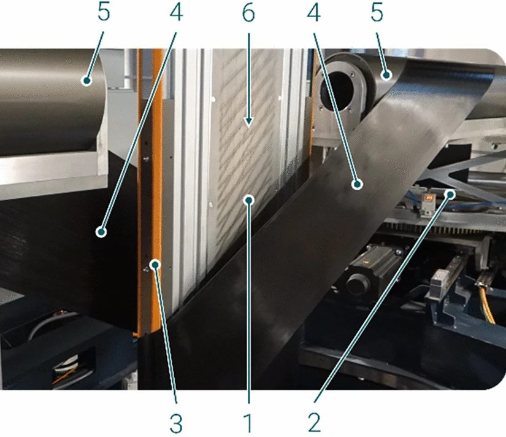
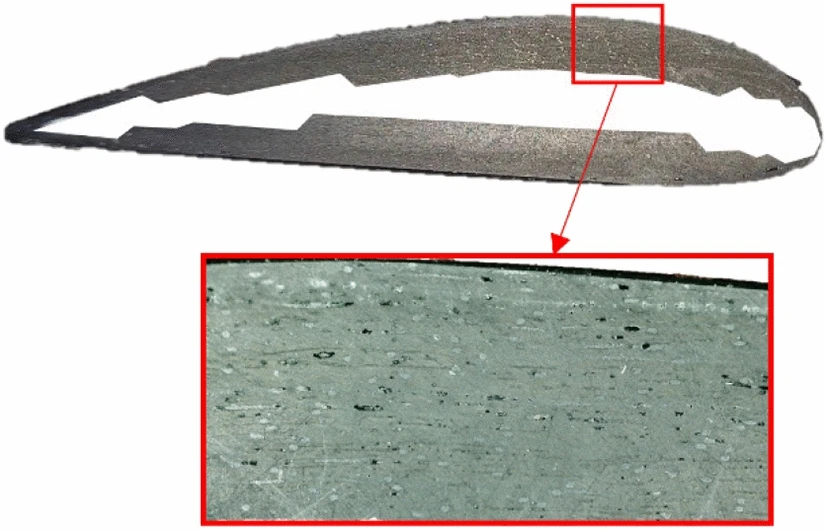
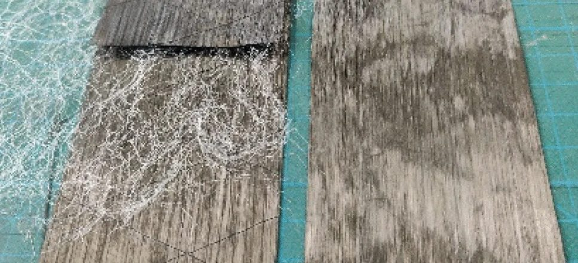
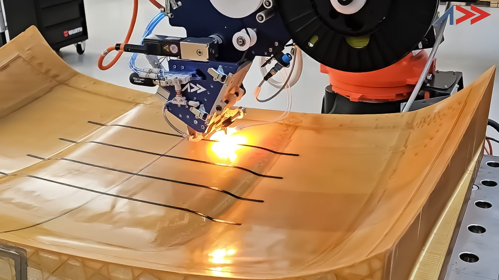
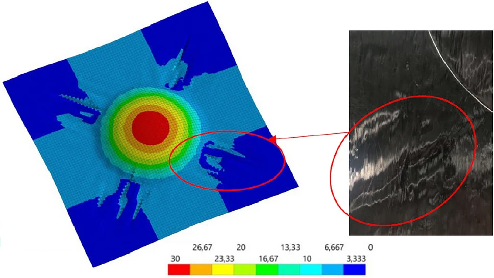
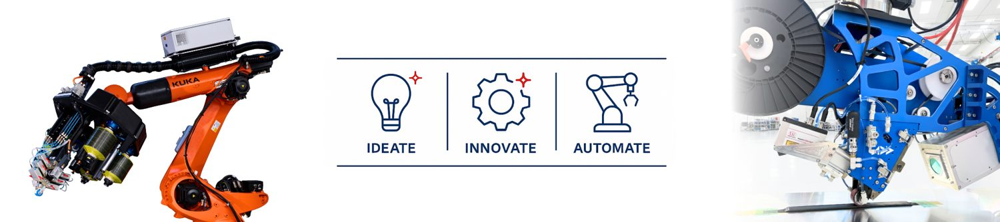

A Redesigned eVTOL Propeller Gained 80% More Stiffness and Cut Production Time by 30%: Using Fabric, Not Prepreg Tape

Urban air mobility keeps promising a future where short hops between airports, city centres, and outlying landing pads happen by air instead of by road. But the aircraft meant to deliver that future run into a stubborn engineering contradiction at the component level. Nowhere is that contradiction sharper than in the propeller.
An eVTOL propeller has to behave like an aerospace part: stiff, fatigue-tolerant, dimensionally stable, and trustworthy enough to satisfy aviation-grade quality expectations. At the same time, it has to be produced like an automotive part, in the tens of thousands, quickly, cheaply, and repeatably. Traditional high-performance composite propeller manufacturing, built on hand lay-up and prepreg tape, is very good at the first requirement and quite bad at the second.
A 2025 open-access study in the CEAS Aeronautical Journal takes that contradiction head-on. Rico Hubert, Tobias A. Weber, Lars Linnemann, Brian G. Falzon, and Adrian C. Orifici document a research and development project (branded “pro.EVOLUTION”) that rebuilt an eVTOL propeller around tailored non-crimp fabrics (T-NCFs), stitch-free layers held together with adhesive rather than thread, and a custom design tool called “Proptimize.” The paper was published online on 19 August 2025 and is licensed under Creative Commons Attribution 4.0. What follows is our summary of that work, with a clear line drawn between what the paper reports and where Addcomposites adds its own commentary.
Why eVTOL Propellers Are a Manufacturing Problem, Not Just a Design Problem
The paper frames the challenge with market numbers. According to the authors, eVTOL vehicle production is projected to climb from roughly 500 units in 2025 to about 15,000 units by 2035, and one cited forecast anticipates on the order of 160,000 electric urban air mobility vehicles over a thirty-year horizon. Because these are small passenger aircraft that carry several rotors each, the propeller count multiplies fast.
A multi-rotor eVTOL air taxi on final approach to a rooftop vertiport, illustrating the urban air mobility use case that is projected to scale from hundreds to hundreds of thousands of aircraft over the next decade.
The study puts a concrete figure on the bottleneck: it estimates that one worker on the current hand-lamination line manages on the order of 1,800 blades a year, while the segment may need something close to a million blades by 2035. The authors argue that the real barrier to scaling isn't lightweight design on its own; it's moving proven, repeatable, quantifiable processes into high-volume production without giving up aviation's safety margins.
This is the exact pressure point Addcomposites hears about from customers building rotor and propeller structures. The physics of a good blade is well understood. The manufacturing economics are what decide whether a program survives contact with a production ramp. The paper is useful precisely because it treats manufacturing cost and labour as first-class design variables rather than afterthoughts.
The Benchmark: A Hand-Laid State-of-the-Art Blade, and Where It Leaks Time and Money
The reference point for the study is the H25F propeller from Helix-Carbon GmbH. The paper describes it as an eVTOL blade that has already been empirically refined, with a span of about 1.8 m producing roughly 380 N of thrust at 5 kW of electrical power. It is a high-aspect-ratio blade built as a hollow all-composite shell around a spacer-fabric core, and it was developed through around ten trial-and-error iterations of static and dynamic bench testing.

The H25F benchmark propeller from Helix-Carbon GmbH: a single high-aspect-ratio carbon-fibre eVTOL blade, roughly 1.8 m in span, shown against a plain background. This hand-laid, empirically refined blade is the state-of-the-art reference the study measures its redesign against. Figure 2 from Hubert et al., CEAS Aeronautical Journal 2026, 17, 810. doi.org/10.1007/s13272-025-00880-9 — © 2025 the authors, licensed under CC BY 4.0.
Its structural lay-up leans on three separate semi-finished products: a 245 g/m² carbon fabric at 0/90°, a 110 g/m² carbon fabric at ±45°, and a 250 g/m² unidirectional ultra-high-modulus (UHM) carbon tape at 0°. The authors report that the UHM tape, while stiff, wetted out poorly and produced inconsistent results, so it was restricted to less than a quarter of the wall thickness in each half-shell.
The material testing exposed the reproducibility problem plainly. The paper reports a mean fibre volume fraction around 0.32 for the propellers, but scatter in the individual material tests ran high, up to 28% for stiffness on the UHM tape and 24% for compressive strength, against an aviation expectation that scatter should sit below roughly 5%. As the authors write, specimens made this way, “without additional pressurization/compaction,” tended toward low structural-design allowables.
Then there is the sheer choreography of building it. The blade is divided into eight distinct lay-up sections, which means cutting and placing a large number of plies by hand. The paper puts the manufacturing time for a two-blade propeller at roughly 210 minutes excluding cure, with cutting the single most time-consuming step, and it breaks the cost down as shown below.
H25F BENCHMARK · HAND LAY-UP
Where the cost and time go
Production-cost share of a hand-laid two-blade propeller, and the ~210 min of hands-on time it takes (excl. cure). Built by Addcomposites from figures reported in the paper, Sect. 2.3.
~210 min
hands-on time per two-blade propeller (excl. cure)
Most time-consuming single step: cutting the dry material — 8 lay-up sections × 3 structural fibre materials.
Put together, the benchmark is an honest picture of the industry's current ceiling: capable blades, but a diverse material catalogue and a manual process that the authors argue does not meet future certification needs for the sector.
The Core Idea: Fold Many Plies Into One Tailored Fabric
The project's central move is to stop building the laminate from many individual plies and instead pre-combine them into a single engineered fabric. That fabric is the tailored non-crimp fabric.
A conventional NCF holds its layers together with stitching. The approach here is stitch-free: the unidirectional layers are bonded across their full contact area with a thermally activated adhesive binder. That sidesteps stitching entirely, along with the dedicated equipment it needs and the fibre breakage it can cause. The paper describes producing these fabrics on a winding-based process it calls “Fibraforce Technology,” developed by Fibraworks GmbH and demonstrated on a prototype machine designated MD25.

A ±45° tailored non-crimp fabric being produced on the MD25 prototype using Fibraforce Technology with TeXtreme Gapped UD. The dry unidirectional tows are laid down on the winding platform at the set angle, showing how a single stitch-free fabric is built up in place of separately cut and stacked plies. Figure 8 from Hubert et al., CEAS Aeronautical Journal 2026, 17, 815. © 2025 the authors, CC BY 4.0.
One practical feature is how the process sets fibre angle. Rather than laying orientations down in separate discontinuous steps, the angle set on the winding machine is the angle the fibres end up sitting at in the finished fabric, tunable across roughly 30° to 70°. The authors report the prototype producing fabric up to 850 mm wide at speeds up to 9 m/min, which works out to a productivity of about 765 m²/h at a ±45° winding angle, with a projected path toward far higher throughput if the width is extended.

Example winding at a ±60° angle on the MD25 prototype, with the key elements labelled: the winding plane (1), the two unwinders (2) that feed and tension the UD-tape (4), the conveyer belts (3), the guidance deflection barrels (5) that wrap the tape around the winding plane, and the tensioning elements (6). Figure 5 from Hubert et al., CEAS Aeronautical Journal 2026, 17, 814; figure sourced from ref. [35] (JEC Group).
Crucially, a T-NCF can be given a general structure the authors express as [±α, 0n, 90m, Patches] — an outer pair of angle plies, some number of 0° layers, some number of 90° layers, and optional local reinforcing patches. That single stack can carry the torsional, bending, and strength duties that previously required three different materials.
Here is what that consolidation does to the blade's build complexity:
PROCESS REDESIGN · SECT. 3.2
Lay-up complexity: before vs after
Folding many individual plies into pre-combined tailored non-crimp fabrics collapses the blade's build. Built by Addcomposites from process figures reported in the paper, Sect. 3.2.
Cutting time reduced by more than 35%
rectangular tapes are far easier to cut than plies shaped to the blade contour
The deeper lesson here is about part integration. Every ply you eliminate is a cut, a placement, an alignment check, and an opportunity for scatter that you remove from the shop floor. Whether the route is a pre-consolidated fabric or automated deposition, the winning move for eVTOL volumes is the same: reduce the number of discrete manual operations per part.
Changing the Process, Then Changing the Material Twice
Consolidating plies forced a second decision. The paper explains that once you try to wet out a whole bonded stack in a single shot instead of layer by layer, hand lamination can no longer saturate it reliably, so the team moved the propeller to vacuum infusion. The authors note this was chosen deliberately as a reproducible technique that could slot into existing workstations with only modest additions, mainly vacuum pumps and tubing, keeping the transition fast and inexpensive.
The material path was less smooth, and the paper is candid about it. The team first selected a single low-cost fibre, the industrial-grade Panex PX35 from Zoltek, processed into an 80 g/m² unidirectional fabric (Unidry) from UNI-CARBON. On paper it was ideal: cheap, available, high strength. In practice, the authors report that Unidry proved much harder to saturate than expected because its dense, homogeneous fibre packing resisted resin flow, which drove up porosity and kept scatter high in tension and interlaminar shear.

A section cut through a propeller made from Unidry 80 g/m², with a magnified view of the laminate. The black regions are porosity voids left by insufficient resin saturation (the white core section is excluded), a direct picture of the infiltration problem that pushed the team to switch reinforcement materials. Figure 19 from Hubert et al., CEAS Aeronautical Journal 2026, 17, 823. © 2025 the authors, CC BY 4.0.
So they switched a second time, to TeXtreme Gapped UD from Oxeon AB, a dry reinforcement in which the fibre tows are spaced with precise openings that give resin room to travel through the stack. Its UTS50 fibres behave mechanically much like the Panex PX35 grade, so stiffness and strength stayed comparable, but infiltration improved dramatically. The paper reports experimental scatter in the shear results falling from more than 9% with Unidry to roughly 4% with the gapped material.
The payoff shows up most clearly in fibre volume fraction, which is a direct lever on both stiffness and quality:
MATERIAL QUALITY · SECT. 3.3.1 / 5.3
Fibre volume fraction climbing toward the target
Vf is a direct lever on both stiffness and quality. Built by Addcomposites from Vf values reported in the paper.
For the binder itself, a weighted comparison of candidates led the team to a thermoplastic adhesive web, Spunfab PA1203 at 6 g/m², chosen for its balance of processing maturity, cost, and minimal drag on the fabric's permeability.

The stitch-free binder in two states. Left: a T-NCF with the Spunfab adhesive web laid over the carbon fibres before processing. Right: the same layers after thermal activation, where the melted thermoplastic binder has bonded the fibre plies together — the bonding mechanism that replaces stitching across the fabric's full contact area. Figure 7 from Hubert et al., CEAS Aeronautical Journal 2026, 17, 815; figure from ref. [45].
Proptimize: Putting Manufacturing Cost Inside the Design Loop
The design tool is where the study's philosophy becomes concrete. The authors argue that conventional design tends to chase the flight numbers first and leave how the part will actually be built for later, which is what drives low production rates and high scrap. Proptimize is built to optimise against several competing objectives at once, including some the authors describe as “soft factors” that are handled through statistically determined thresholds rather than clean equations.
The tool is organised as three linked modules that iterate until every constraint is satisfied.
PROPTIMIZE · SECT. 4 / FIG. 18
Three modules, one iterative loop
Mechanical, quality and economic checks iterate until all thresholds are met at once. Redrawn by Addcomposites from the process described in Fig. 18 / Sect. 4 — not the figure itself.
- 1) twist check
- 2) bending check
- 3) failure (IRF, Puck)
re-designs the laminate if a limit fails
- drapability + permeability checks
infiltration time · fibre volume · porosity
- cost + time estimate
T-NCF + raw-material cost · labour · production time
The mechanical module runs automated ANSYS routines that mesh the geometry, apply loads, and evaluate results in a deliberate order. Because the study found propeller twist to be the dominant driver of aeroelastic performance, the analysis checks twist first, then bending deformation, then strength via the Inverse Reserve Factor computed with Puck failure criteria. The authors describe practical optimisation rules coded into the subroutines. For a blade that twists past its limit, the rules offer two moves: swap in a heavier base fabric so the layer count (and therefore cost) holds, or drop in a second T-NCF, which lifts both bending and torsional stiffness at once.
The quality module predicts infiltration time and flags configurations that would exceed the resin's pot life or invite dry spots, drawing on a database expanded with flow simulations. The economic module estimates cost, labour, and cycle time. The authors are transparent that they did not implement genetic algorithms or similar autonomous optimisers, because too many interacting soft parameters made that impractical at this stage; the tool instead converges through thresholds and engineering rules.
The transferable idea here is not the specific software. It is the discipline of refusing to separate design from cost. A design-for-manufacture loop that quotes labour and cycle time on every iteration is a template any composites manufacturer can adopt, whatever the deposition method.
The Results: What a Holistic Redesign Actually Bought
The team built and tested physical demonstrator propellers, not just simulations, and compared them against the benchmark and against Proptimize's own predictions.
VALIDATION · TABLE 4
Predicted vs tested vs benchmark
Physical demonstrator propellers measured against Proptimize's predictions and the hand-laid benchmark. Built by Addcomposites from Table 4 of the paper.
| Parameter | Benchmark | Proptimize prediction | Tested demo | Note |
|---|---|---|---|---|
| Bending [mm] | 42.0 | 40.7 | 40.6 | prediction ~spot on |
| Twist [deg] | 2.7 | 1.4 | 1.3 | large improvement |
| Max. IRF [–] | 1.0 | 0.9 | — | within strength limit |
| Production time [min] | 365.0 | 300.0 | 300.0 | time cut, as modelled |
| Fibre material cost [€] | 23.4 | 11.1 | 22.5 | see caveat |
The paper also documents where the model fell short. Proptimize predicted the fibre material cost would roughly halve, but the tested demonstrators came in near the benchmark cost. The authors attribute this to excess waste during T-NCF production of the then very new gapped fabric, driven by fabric imperfections and unrefined machine settings during a short development window, and they expect the figure to improve as the material and process mature. They also note the quality module could not yet reliably distinguish the two raw materials on infiltration quality because of thin experimental data, and they call for more work there.
Reporting the misses alongside the wins is what makes the results easy to trust. A paper that only showed the headline stiffness gains would read as marketing; one that flags where its own cost model overshot reads as engineering.
On mechanical performance, the gains were large. The paper reports bending stiffness up 97% and torsional stiffness up 83% versus the benchmark. Because the redesigned blade weighs essentially the same, the stiffness-per-kilogram metrics rose almost as much: about 94% in the longitudinal direction and 80% in torsion. Porosity dropped from 7% to a local maximum of 4.5% under matched conditions, and measured bending deformation in static tests fell by 24%. Aerodynamically, PropCODE, the team's in-house aerodynamic tool, indicated a modest thrust gain of roughly 2% at 2,500 rpm.
To roll everything into one number, the authors built a weighted metric across thirteen parameters, assigning higher weights to what matters most for aerospace (stable quality and low porosity) and lower weights to convenience factors.
HOLISTIC REDESIGN · TABLE 5
Change vs benchmark, by parameter
Raw improvement over the hand-laid benchmark across 13 parameters; positive = better. Built by Addcomposites from Table 5 of the paper.
A note on the headline “30%”: the paper's abstract summarises the labour and time savings as roughly a 30% reduction. The detailed table separates this into a 36% improvement in manual labour and a 17% reduction in production time (365 to 300 minutes), so the abstract's figure is best read as a rounded, combined summary rather than a single measured value.
Finally, all of this came from a genuinely simpler blade: five lay-up sections instead of eight, built from one fibre material instead of three.
SIMPLER BLADE · FIG. 22
Laminate sections along the span
Eight sections and three materials collapse to five sections and one, with the T-NCF wall tapering from root to tip. Built by Addcomposites from the section thicknesses in Fig. 22 of the paper.
Benchmark H25F — 8 sections / 3 materials
T-NCF propeller — 5 sections / 1 material
Where This Connects to Automated Fibre Placement
The paper is not about automated fibre placement. Its chosen route is a pre-consolidated dry fabric plus vacuum infusion, and it is worth being precise about that rather than stretching the findings to fit a product story.
What does transfer cleanly is the problem statement. The study diagnoses hand lay-up's core weaknesses as manual cutting load, high scatter, and a diverse material catalogue that resists a stable, certifiable routine. Automated fibre placement attacks the same weaknesses from a different angle, replacing manual placement with repeatable machine deposition and shrinking the human-error surface that the paper identifies as the source of low design allowables.

The Addcomposites AFP-XS head depositing carbon-fibre tow onto a curved tool — repeatable, heat-assisted machine placement in place of manual cutting and hand lay-up.
For teams building propeller and rotor structures for eVTOL programs, the takeaway we draw is that automation and design-for-manufacture belong together from day one. Addcomposites positions the AFP-XS as an accessible entry point into automated deposition for exactly this audience: manufacturers who need aerospace-grade repeatability but cannot justify a heavy, capital-intensive cell to get there. The study's second lesson, that a design tool should quote manufacturing cost and cycle time on every iteration, maps directly onto how AFP shops can build their own design-for-manufacture and quoting workflows around AddPath.
None of this implies the study's authors endorse Addcomposites or its products. The connection is our own analysis of a shared engineering problem, offered alongside the paper rather than drawn from it.
Building propeller, rotor, or control-surface structures where manual lay-up is capping your rate? Talk to the Addcomposites team about where automated fibre placement fits your production plan →
Get in Touch with AddcompositesWhat the Authors Flag as Unfinished

Predicting how the fabric forms. Left: a colour displacement map (in mm) from the stamp-forming simulation of the T-NCF. Right: the matching region of the actual formed part for an identical lay-up. Comparing the two is how the team judged draw-in and wrinkling — and the gaps between them are exactly the forming behaviour the authors flag as still needing more precise modelling. Figure 14 from Hubert et al., CEAS Aeronautical Journal 2026, 17, 819; figure from ref. [42] (Hubert, Falzon & Weber, ICCM23).
The paper closes with clear limitations, and they are worth carrying forward honestly. The authors call the overall effort a proof-of-concept. They note the quality module still needs better predictive modelling of local shear angles after forming and their effect on infiltration and porosity, and they point to thin databases as the reason autonomous optimisation algorithms were left out. Their stated future work includes tighter coupling between aeroelastic response and fabric layout, more precise characterisation of T-NCF manufacturing behaviour, and broader datasets to enable data-driven optimisation. They also observe that eVTOL porosity allowables are not yet finalised but will likely tighten toward roughly 1% against current certification norms, which is below the demonstrator's 4.5% and marks a real gap still to close.
The Bigger Signal
Read as a whole, the study is less a claim about one blade and more an argument about method. The 44.8% weighted improvement is the eye-catching number, but the durable contribution is the framing: treat fibre selection, fabric architecture, deposition, infiltration, and cost as one coupled system, and optimise them together rather than in sequence. That is the mindset the eVTOL production ramp will reward, and it is the mindset behind how we think about automated manufacturing at Addcomposites.

References
- R. Hubert, T. A. Weber, L. Linnemann, B. G. Falzon, A. C. Orifici, “Tailored composites and digital optimization for efficient eVTOL propellers,” CEAS Aeronautical Journal 2026, 17, 809–828. Published online 19 August 2025. doi.org/10.1007/s13272-025-00880-9. Open Access, licensed under CC BY 4.0.
- Fibraworks GmbH, “Fibraforce Technology” — winding-based, stitch-free tailored non-crimp fabric production on the MD25 prototype (as described in ref. 1; process figure sourced from JEC Group, ref. [35]).
- Spunfab / Protechnic, thermoplastic adhesive web PA1203 (6 g/m²) — stitch-free binder used to bond the T-NCF plies (as cited in ref. 1, ref. [45]).
- R. Hubert, B. G. Falzon, T. A. Weber, stamp-forming simulation of tailored non-crimp fabrics, presented at ICCM23 (as cited in ref. 1, ref. [42]).
This blog post is an independent summary and commentary by Addcomposites and is not affiliated with or endorsed by the authors of the cited study.